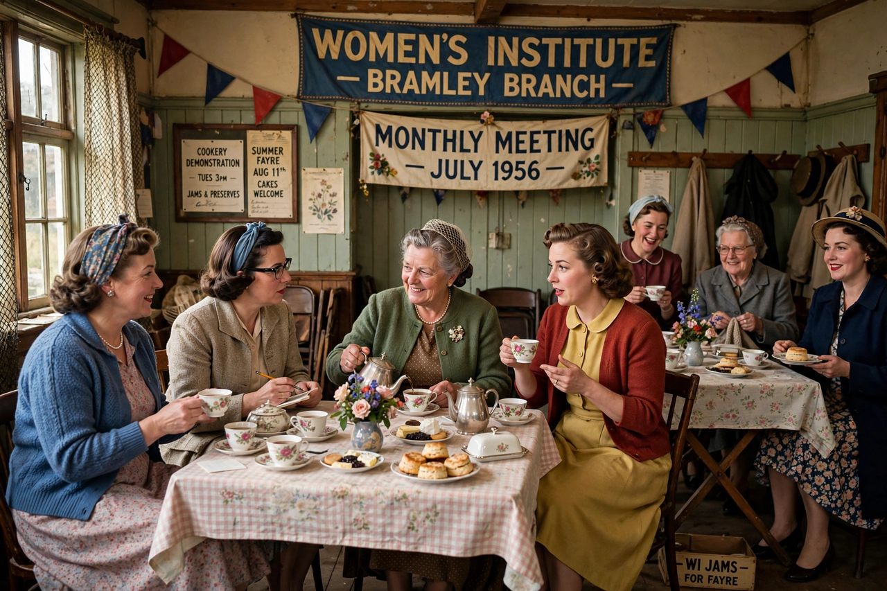

| National Federation of Women's Institutes | |
|---|---|
 A Women's Institute meeting | |
| Formation | 1915 (first British WI, Llanfairpwll, Anglesey) |
| Origins | Stoney Creek, Ontario, Canada (1897) |
| Type | Voluntary women's organisation |
| Headquarters | London, England |
| Membership | Over 180,000 (in more than 6,000 institutes) |
| Anthem | "Jerusalem" |
The Women's Institute (WI) is a community-based organisation for women in the United Kingdom, the Isle of Man, and the Channel Islands, organised in England and Wales by the National Federation of Women's Institutes (NFWI). Founded in 1915 to revitalise rural communities and encourage women to become more involved in producing food during the First World War, it has grown into the largest voluntary women's organisation in the UK, with over 180,000 members in more than 6,000 local institutes.
The movement began in Stoney Creek, Ontario, in 1897, founded by Adelaide Hoodless and Erland and Janet Lee. It was brought to Britain during the First World War; the first British WI met at Llanfairpwll on Anglesey in September 1915, under the auspices of the Agricultural Organisation Society, and the National Federation was formed in 1917. In the Second World War the WI famously organised fruit preservation, jam-making, and evacuation support, and adopted William Blake's "Jerusalem" as its anthem. The 2003 film Calendar Girls, depicting the Rylstone WI's nude charity calendar, brought the organisation worldwide attention.
The WI describes its ideals as truth, justice, tolerance, and fellowship. Local institutes hold monthly meetings with speakers, demonstrations, and crafts, while the national body campaigns on resolutions voted by members—past campaigns have addressed rural services, food labelling, climate change, mental health, violence against women, and the shortage of midwives. Denman College, founded in 1948 in Oxfordshire, long served as the WI's residential adult-education centre.
Each local WI belongs to a county or island federation, which in turn federates to the NFWI. The organisation is non-party-political and non-sectarian, and membership is open to women of all ages; urban institutes have expanded rapidly in the twenty-first century alongside the traditional village branches.